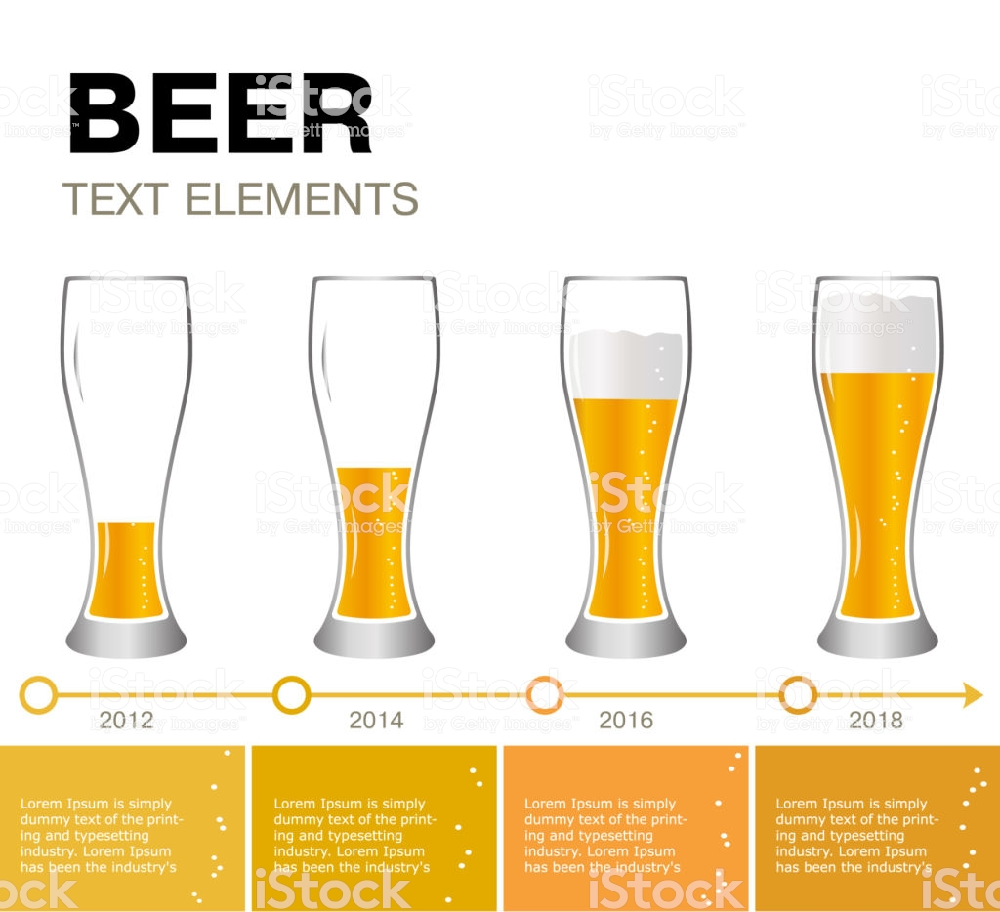

eu mesmo tomo uma todo dia n consego ficar sem,A cerveja (do gaulês, através do latim servisia) é uma bebida produzida a partir da fermentação de cereais, principalmente a cevada maltada. Acredita-se que tenha sido uma das primeiras bebidas alcoólicas que foram criadas pelo ser humano. Atualmente, é a terceira bebida mais popular do mundo, logo depois da água e do café. É a bebida alcoólica mais consumida no mundo atualmente.

todos direitos autorais e de joão vitor nascimento da silva mais info wikipedia